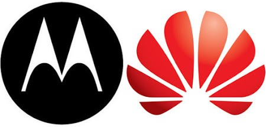
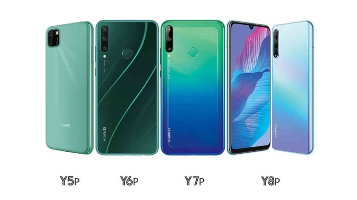

Motorola
Fue unos multinacionales de telecomunicaciones empresa fundada el 25 de septiembre de 1928, con sede en Schaumburg, Illinois. Después de haber perdido $ 4.3 mil millones de 2007 a 2009, la compañía se escindió en dos compañías públicas independientes, Motorola Mobility y Motorola Solutions el 4 de enero de 2011. Motorola Inc. pasó a llamarse Motorola Solutions y es legalmente el sucesor directo de la compañía original. Después de la escisión de Motorola Mobility. Motorola Mobility se vendió a Google en 2012 y fue adquirida por la empresa china Lenovo en 2014. Motorola diseñó y vendió equipos de redes inalámbricas, como estaciones base de transmisión celular y amplificadores de señal.
Los productos de redes domésticas y de transmisión de Motorola incluían decodificadores, grabadoras de video digital y equipos de red utilizados para permitir la transmisión de video, telefonía por computadora y televisión de alta definición. Sus clientes comerciales y gubernamentales consistían principalmente en sistemas inalámbricos de voz y banda ancha (utilizados para construir redes privadas) y sistemas de comunicaciones de seguridad pública como Astro y Dimetra. Estas empresas (excepto decodificadores, redes inalámbricas y módems de cable)) ahora forman parte de Motorola Solutions. Google vendió Motorola Home (el antiguo negocio de cables de instrumentos generales) al Grupo Arris en diciembre de 2012 por 2.350 millones de dólares. La división de teléfonos inalámbricos de Motorola fue pionera en teléfonos celulares.
También conocido como el Sector de Comunicaciones Personales (PCS) antes de 2004, fue pionero en el "teléfono móvil" con DynaTAC, el "teléfono plegable" con el MicroTAC, así como el "teléfono almeja" con el StarTAC en la década de 1990. Había protagonizado un resurgimiento en la década de 2000 con el Razr, pero perdió participación de mercado en la segunda mitad de esa década. Más tarde se centró en los teléfonos inteligentes que utilizan el sistema operativo móvil Android de código abierto de Google. El primer teléfono que utilizó la versión más reciente del sistema operativo de código abierto de Google, Android 2.0, fue lanzado el 2 de noviembre de 2009 como Motorola Droid (la versión GSM se lanzó un mes después, en Europa, como Motorola Milestone). La división de teléfonos (junto con las divisiones de decodificadores de cable y módems de cable, que luego se venderían a Arris Group) se escindió más tarde en la independiente Motorola Mobility. El 22 de mayo de 2012, el CEO de Google, Larry Page, anunció que Google había cerrado su acuerdo para adquirir Motorola Mobility. El 29 de enero de 2014, Page anunció que, a la espera del cierre del acuerdo, la empresa de tecnología Lenovo con sede en Hong Kong adquirirá Motorola Mobility por 2.910 millones de dólares (sujeto a ciertos ajustes). El 30 de octubre de 2014, Lenovo finalizó la compra de Motorola Mobility a Google.
Huawei

Es una empresa tecnológica multinacional china. Proporciona equipos de telecomunicaciones y vende electrónica de consumo, teléfonos inteligentes. Su sede se ubica en Shenzhen (Guangdong). La compañía fue fundada en 1987 por Ren Zhengfei. Inicialmente centrada en la fabricación de conmutadores telefónicos, Huawei ha ampliado su negocio para incluir la construcción de redes de telecomunicaciones, proporcionando servicios operativos y de consultoría y equipos a empresas dentro y fuera de China, y la fabricación de dispositivos de comunicación para el mercado de consumo.
Huawei tiene más de 194.000 empleados a fecha de diciembre de 2019. Huawei ha desplegado sus productos y servicios en más de 170 países. Huawei superó a Ericsson en 2012 como el mayor fabricante de equipos de telecomunicaciones del mundo, y superó a Apple en 2018 como el segundo mayor fabricante de teléfonos inteligentes del mundo, detrás de Samsung Electronics. En diciembre de 2019, Huawei informó que sus ingresos anuales habían aumentado a 121.720 millones de dólares en 2019. En ese mismo año, la compañía se expandió rápidamente en Latinoamérica, región donde ha hecho grandes inversiones en marketing para posicionar la marca desde 2014.
Huawei ha abierto centros de datos en Chile y Brasil y tiene planes de expansión en México. Aunque ha tenido éxito a nivel internacional, Huawei se ha enfrentado a dificultades en algunos mercados, debido a reclamos de apoyo estatal indebido y preocupaciones de seguridad cibernética —principalmente del gobierno de los Estados Unidos— de que el equipo de infraestructura de Huawei puede permitir la vigilancia del gobierno chino. Con el desarrollo de las redes inalámbricas 5G, ha habido advertencias de los Estados Unidos para evitar el uso de productos de Huawei o de la compañía china de telecomunicaciones ZTE por parte de los Estados Unidos y sus aliados.
Huawei ha argumentado que sus productos no representan "un riesgo de seguridad cibernética mayor" que los de cualquier otro proveedor y que no hay evidencia de las demandas de espionaje de los EE.UU. Algunas cuestiones sobre la propiedad y el control de Huawei, así como preocupaciones sobre el alcance del apoyo estatal también permanecen. En medio de una guerra comercial en curso entre China y los Estados Unidos, Huawei se vio restringida de hacer comercio con empresas estadounidenses debido a supuestas violaciones previas y deliberadas de las sanciones de los Estados Unidos contra Irán. El 29 de junio de 2019, el presidente de los Estados Unidos, Donald Trump, llegó a un acuerdo para reanudar las conversaciones comerciales con China y anunció que suavizaría las mencionadas sanciones contra Huawei. Huawei redujo 600 puestos de trabajo en su centro de investigación de Santa Clara en junio, y en diciembre de 2019 el fundador Ren Zhengfei dijo que trasladaría el centro a Canadá porque las restricciones les impedirían interactuar con los empleados de EE.UU.